Tutorial Parametrix
In questa pagina si trova una raccolta di tutorial pensati per aiutare a conoscere e utilizzare al meglio le principali funzionalità del software. Seguire le guide passo dopo passo ad imparare rapidamente e risolvere i dubbi più comuni.
- PARAMETRIX TUTORIALS
- TR0001 FLUSSO DI LAVORO COMPLETO
- TR0002 GESTIONE TAGLI E FILE PGM
- TR0003 FOTO
- TR0004 CREAZIONE DI PEZZI
- TR0005 GESTIONE DEI PEZZI
- TR0006 SPOSTAMENTI AUTOMATICI
- TR0007 SPOSTAMENTI MANUALI
- TR0008 MACCHIA APERTA
- TR0009 CREAZIONE PROGETTO MULTILASTRA
- TR0010 LAVORAZIONI DI UN PROGETTO MULTILASTRA
- TR0011 PERFORMANCE MULTILASTRA
- TR0012 COMMESSE CSV
- TR0013 HELP SYSTEM
- TR0014 LAVORAZIONI DA LAYER DXF
- TR0015 LAVORAZIONI DA MODIFICA PEZZO
- TR0016 LAVORAZIONI PER PIANI CUCINA DA MODIFICA PEZZO
- TR0017 FLUSSO DI LAVORO UFFICIO
- TR0018 SLAB MATCHING
- TR0019 TAGLI COMBINATI
- TR0020 PEZZI STANDARD
- TR0021 NESTING
- TR0022 IMPORTAZIONE LAYOUT DXF
- TR0023 IMPORTAZIONE LAYOUT DXF
- TR0024 STATISTICHE
Codice | Tutorial | Immagine |
|---|---|---|
TR0001 | Flusso di lavoro completo Flusso di lavoro completo, dalle foto ai pezzi ai tagli |  |
TR0002 | Gestione tagli e file PGM Gestione taglio di pezzi e generazione del file PGM. |  |
TR0003 | Foto Scattare la foto con la fotocamera o utilizzare una foto già scattare, inserire perimetro ed eventuali aree da evitare. |  |
TR0004 | Creazione di pezzi Come creare pezzi: rettangolari, da file DXF, da file CSV o da figure parametriche. | 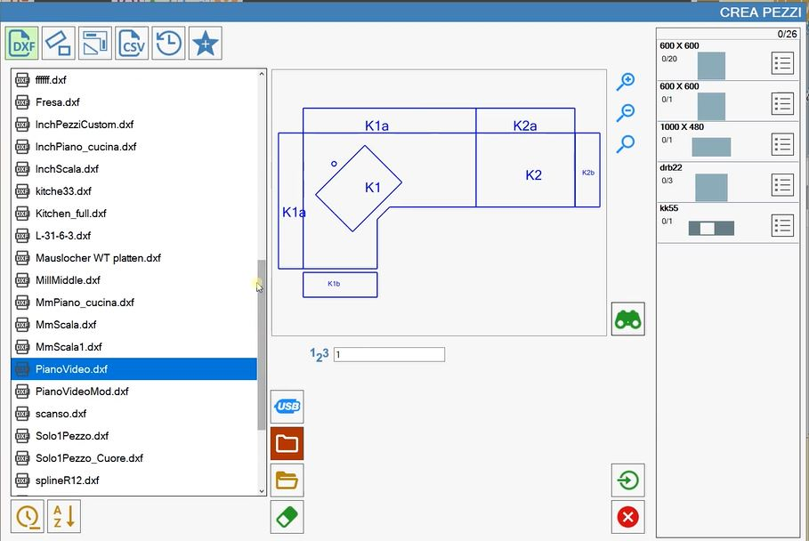 |
TR0005 | Gestione dei pezzi Come muovere e ruotare i pezzi, utilizzare la funzione calamita e applicare tagli inclinati. |  |
TR0006 | Spostamenti automatici Come utilizzare la funzione di spostamenti automatici. |  |
TR0007 | Spostamenti manuali Come utilizzare la funzione di spostamenti manuali selezionando i tagli. |  |
TR0008 | Macchia Aperta Come creare e lavorare una configurazione macchina sulla macchina. | 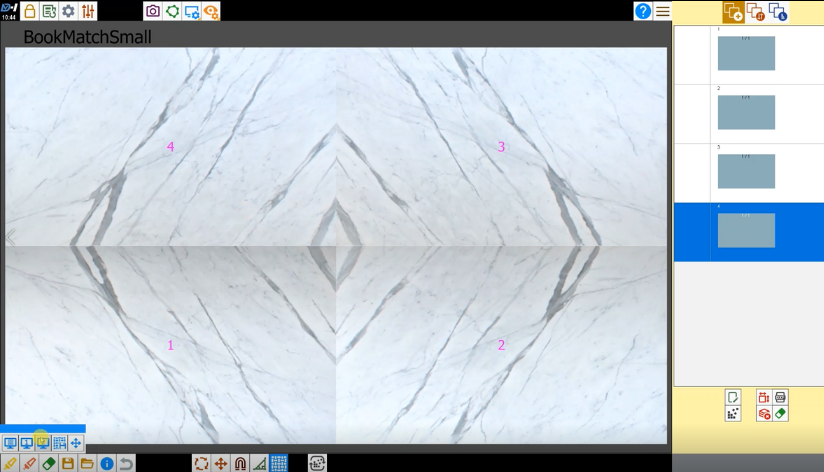 |
TR0009 | Creazione progetto multilastra Come creare un progetto con più lastre e posizionare i pezzi sulle lastre. |  |
TR0010 | Lavorazioni di un progetto multilastra Come aprire le lavorazione di un progetto multilasta salvato. | 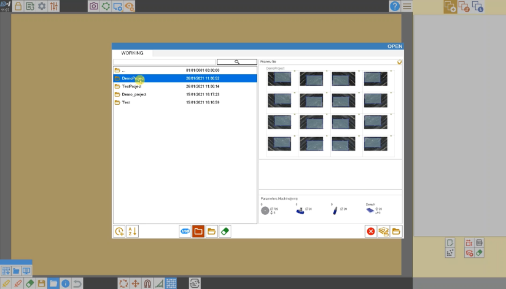 |
TR0011 | Performance multilastra Esempio di un progetto con tante lastre da gestire. | 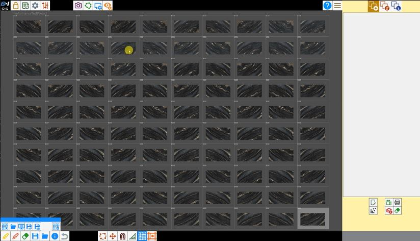 |
TR0012 | Commesse csv Esempio di come utilizzare proprietà aggiuntive nei file CSV per gestire le commesse. | 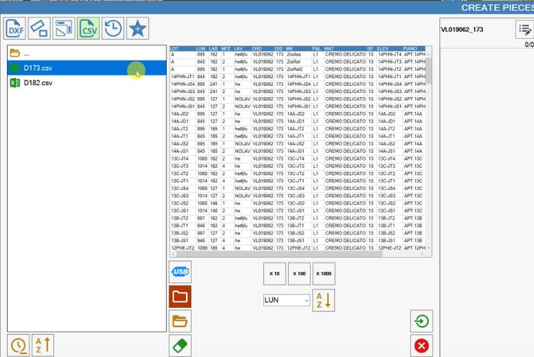 |
TR0013 | Help System Come attivare il sistema di help sulla macchina. |  |
TR0014 | Lavorazioni da layer DXF Come importare un file dxf con lavorazioni definite tramite layer. |  |
TR0015 | Lavorazioni da Modifica pezzo Come aggiungere lavorazioni sui pezzi. | 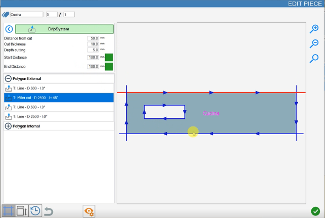 |
TR0016 | Lavorazioni per piani cucina da Modifica Pezzo Come aggiungere lavorazioni su piani cucina. | 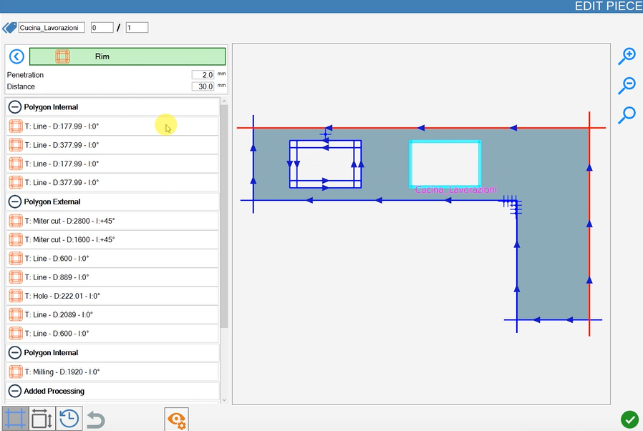 |
TR0017 | Flusso di lavoro ufficio Come utilizzare il software in modalità ufficio, sincronizzare gli utensili e creare lavorazioni. |  |
TR0018 | Slab Matching Come utilizzare la funzione di slab matching (allineamento lastra) per sovrapporre lavorazioni create in ufficio sulla lastra caricata in macchina. | 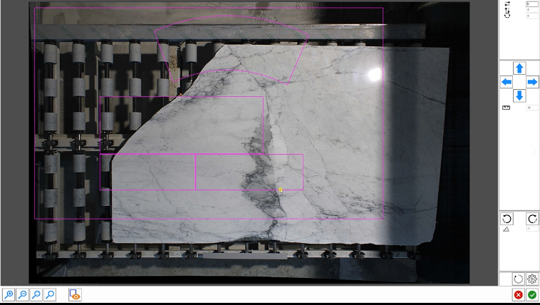 |
TR0019 | Tagli combinati Come creare una serie di tagli sulla lastra. |  |
TR0020 | Pezzi standard Si possono creare e gestire grandi quantità di pezzi rettangolari, che sono utilizzati durante il nesting oppure creati dalle rimanenze di lastre. | 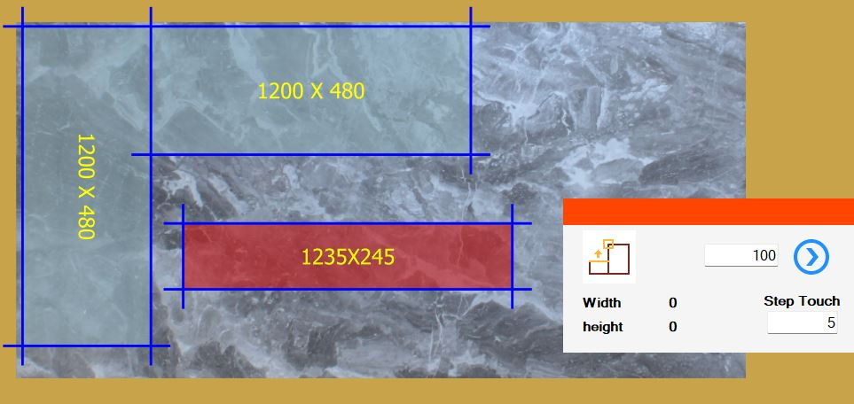 |
TR0021 | Nesting Come lavora il nesting, anche con le aree da evitare. |  |
TR0022 | Importazione Layout DXF Come importare layout di taglio da DXF con perimetro lastra. | 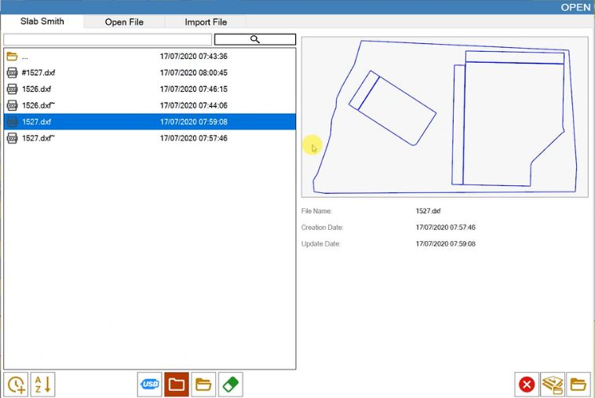 |
TR0023 | Importazione layout DXF Come importare layout di taglio da DXF con perimetro lastra utilizzando lo slab matching. |  |
TR0024 | Statistiche Come visualizzare le statistiche ed esportare report. | 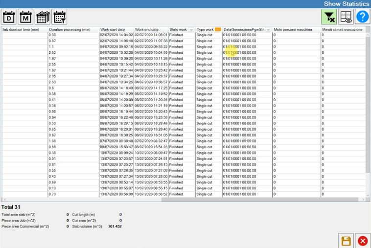 |
Flusso di lavoro completo, dalle foto ai pezzi ai tagli.
Gestione taglio di pezzi e generazione del file PGM.
Scattare la foto con la fotocamera o utilizzare una foto già scattare, inserire perimetro ed eventuali aree da evitare.
Come creare pezzi: rettangolari, da file DXF, da file CSV o da figure parametriche.
Come muovere e ruotare i pezzi, utilizzare la funzione calamita e applicare tagli inclinati.
Come utilizzare la funzione di spostamenti automatici.
Come utilizzare la funzione di spostamenti manuali selezionando i tagli.
Come creare e lavorare una configurazione macchina sulla macchina.
Come creare un progetto con più lastre e posizionare i pezzi sulle lastre.
Come aprire le lavorazione di un progetto multilasta salvato.
Esempio di un progetto con tante lastre da gestire.
Esempio di come utilizzare proprietà aggiuntive nei file CSV per gestire le commesse.
Come attivare il sistema di help sulla macchina.
Come importare un file dxf con lavorazioni definite tramite layer.
Come aggiungere lavorazioni sui pezzi.
Come aggiungere lavorazioni su piani cucina.
Come utilizzare il software in modalità ufficio, sincronizzare gli utensili e creare lavorazioni.
Come utilizzare la funzione di slab matching (allineamento lastra) per sovrapporre lavorazioni create in ufficio sulla lastra caricata in macchina.
Come creare una serie di tagli sulla lastra.
Si possono creare e gestire grandi quantità di pezzi rettangolari, che sono utilizzati durante il nesting oppure creati dalle rimanenze di lastre.
Come lavora il nesting, anche con le aree da evitare.
Come importare layout di taglio da DXF con perimetro lastra.
Come importare layout di taglio da DXF con perimetro lastra utilizzando lo slab matching.
Come visualizzare le statistiche ed esportare report.